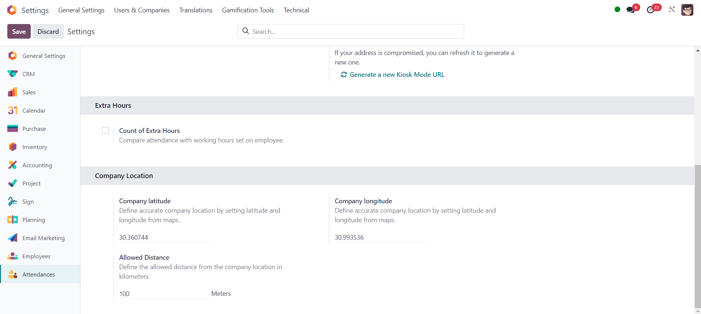

Attendance Location Module
Overview
The Attendance Location module enhances the attendance tracking functionality in Odoo by incorporating location-based restrictions. It allows administrators to define a central office location and specify an allowed distance within which employees can record their attendance. This ensures that employees are physically present within the office premises when clocking in or out, helping organizations maintain accurate attendance records.
Features
- Calculation of attendance based on the office location and allowed distance.
- Automatic validation of employee check-in locations against the configured office location.
- Flexible configuration options to set the office latitude, longitude, and allowed distance.
- Seamless integration with the existing attendance tracking system in Odoo.
- Real-time alerts for employees when their check-in location is not within the allowed distance from the office location.
- Immediate notification to employees to enable location access if it's disabled on their device.
Clear and actionable messages for employees to rectify location-related issues promptly.
Usage
To use the Attendance Location module, follow these steps:
- Install the module in your Odoo instance.
- Configure the office location by setting the latitude, longitude, and allowed distance parameters in the company settings.
- Employees can now record their attendance as usual. The module will automatically validate the check-in/out locations against the configured office location.

Compatibility
This module is compatible with Odoo versions 17 .
Support
For any issues or inquiries related to the Attendance Location module, please contact our support team at support@aptuem.com.